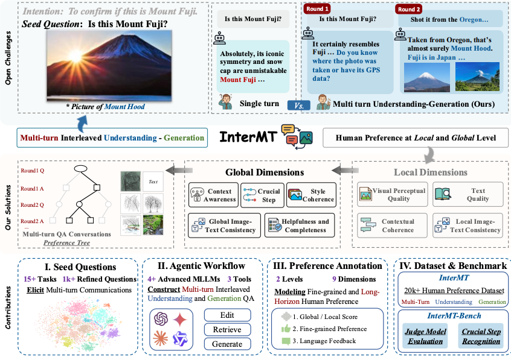
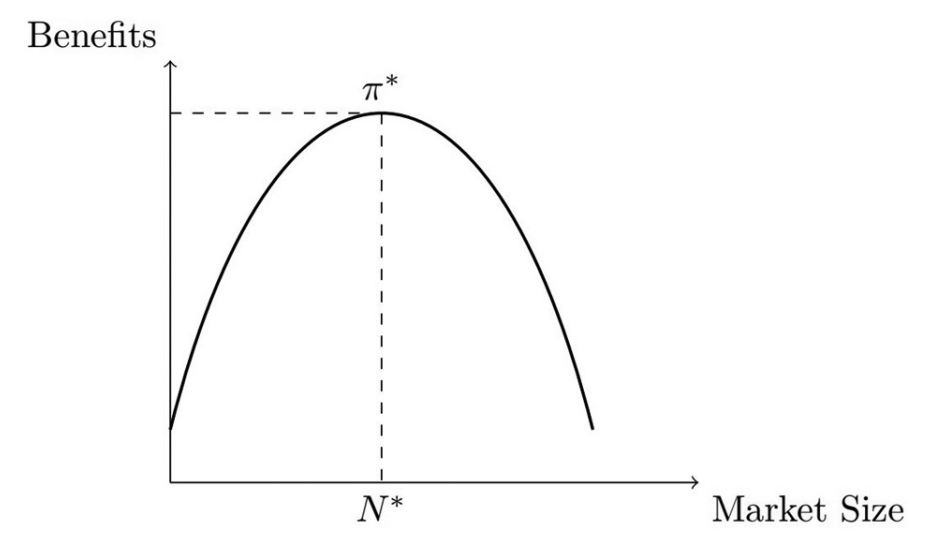
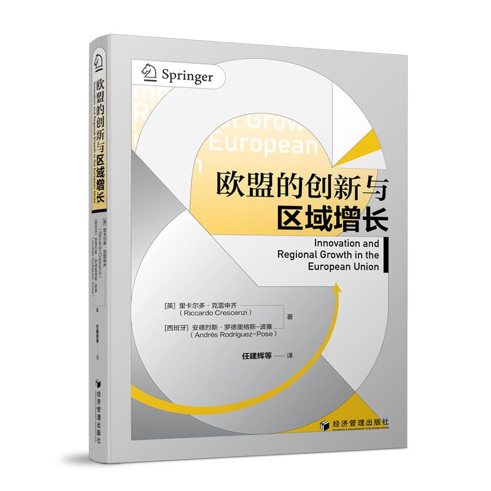
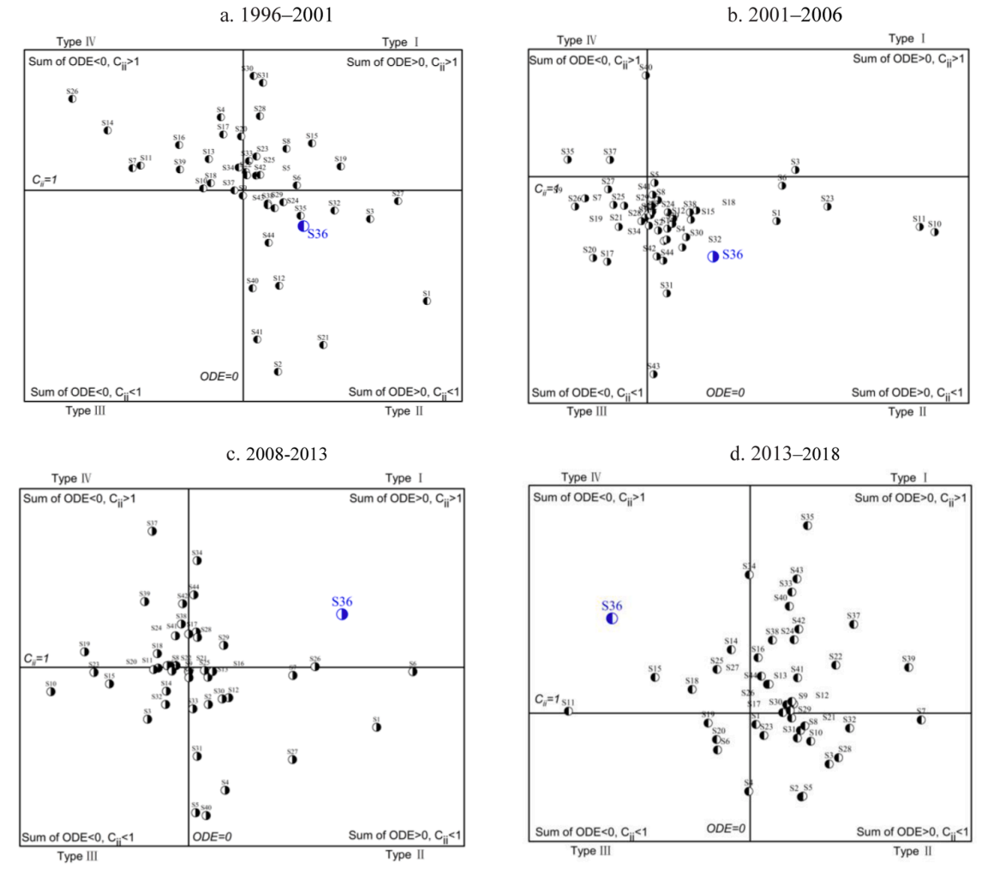

About简介
Hi, I'm Jiacheng "Karcen" Zheng. I will join the Ma Yinchu School of Economics, Tianjin University as an incoming M.A. student in Applied Economics (2026–2029), with research interests in Data Science, Econometrics, Health Economics, Behavior Economics, machine/deep learning and natural language processing applications in economics and climate research.
Hi, 我是 郑嘉诚 (Jiacheng "Karcen" Zheng)。我即将于 天津大学马寅初经济学院 攻读应用经济学硕士学位（2026–2029），研究方向聚焦于 数据科学 · 计量经济学 · 健康经济学 · 行为经济学 · 机器/深度学习 · 自然语言处理 在经济学与气候研究中的应用。
I earned my B.Eng. in Bioengineering from the Marine College, Shandong University (2022–2026, GPA 86.24/100, Excellent Graduate). I took dual-degree track in International Politics & International Economics and
Trade at the Northeast Asian College (2022–2023). Previously I studied Chemical Engineering at Dalian University of Technology (2019–2021, GPA 88/100, top 7.4% of my cohort) before restarting my undergraduate studies.
本科就读于 山东大学海洋学院，生物工程专业（2022–2026，GPA 86.24/100，优秀毕业生）。2022-2023年就读于东北亚学院 国际政治 & 国际经济与贸易 双学位实验班。2019–2021 年曾于 大连理工大学化工学院 学习化学工程（GPA 88/100，专业前 7.4%），后重新参加高考。
In research, I served as a research assistant at the Institute of International Studies & the Center for Regional and Country-Specific Data Analytics, Shandong University (2023–2025, PI: Prof. Yuan Li), working on input–output analysis
and global value chains. In summer 2024 I joined the UCL Bartlett School of Sustainable Construction, University College London(UCL) team to build the IPCC reference citation database. In 2025 I contributed to generative AI alignment research at the Hong Kong University of
Science and Technology (HKUST), which was accepted at NeurIPS 2025(Spotlight) together with Peking University collaborators.
科研方面，我作为研究助理在 山东大学国际问题研究院 / 区域与国别数据分析中心（2023–2025，PI： 远 教授）参与投入产出与全球价值链研究；2024 年暑期加入 伦敦大学学院 (UCL) 巴特莱特可持续建设学院 的 IPCC 参考文献数据库构建项目；2025 年在 香港科技大学 (HKUST) 参与生成式 AI 对齐研究（与北京大学合作者共同投稿被 NeurIPS 2025
接收被评为亮点论文）。
Data Science
Machine Learning & NLP
Data Science for Climate & Economics
Health Economics
Econometrics
Behavioral Economics
🎓 Education学历
 Tianjin University天津大学
Tianjin University天津大学
Sep 2026 – Jun 2029 (Expected)2026 年 9 月 – 2029 年 6 月（预期）
M.A. in Applied Economics · Ma Yinchu School of Economics应用经济学硕士 · 马寅初经济学院
Advisor: Assistant Prof. Shenshen Yang. Research themes: Theoretical Econometrics, Causal Inference, Missing Data, Public Health Policy.
导师：杨珅珅 助理教授。研究方向：理论计量经济学，因果推断，数据缺失，公共健康政策。
Health Economics
Econometrics
Finance
Data Science
 Shandong University 山东大学
Shandong University 山东大学
Sep 2022 – Jun 20262022 年 9 月 – 2026 年 6 月
B.Eng. in Bioengineering · Marine College工学学士 · 海洋学院
GPA 86.24/100 (5/50, top 10%). Excellent Graduate (roughly summa cum laude). Dual-degree program track in International Politics & International Economics and Trade at the Northeast Asian College
(2022–2023).
GPA 86.24/100（约 5/50，专业前 10%）。优秀毕业生。2022-2023 年在东北亚学院修读 国际政治 & 国际经济与贸易 双学位实验班课程。
Undergraduate thesis: Is More Complexity Always Better? Hepatotoxicity Prediction of Marine Natural Products with in vivo Validation in Danio rerio — ranked #1 in the defense panel.
毕业论文：特征质量与模型复杂度的博弈：海洋天然产物肝毒性预测及体内验证 — 答辩组排名第一。
BioengineeringEconomicsData Science
 Dalian University of Technology大连理工大学
Dalian University of Technology大连理工大学
Sep 2019 – Mar 20212019 年 9 月 – 2021 年 3 月
B.Eng. in Chemical Engineering · School of Chemical Engineering工学学士 · 化工学院
GPA 88/100 (top 7.4% of the cohort). Withdrew in 2021 and retook the Gaokao to start a new undergraduate path.
GPA 88/100（专业前 7.4%）。2021 年退学并重新参加高考，开始新的本科阶段。
Chemical EngineeringMathematical ModelingCoding
📝 Publications & Papers
论文发表
NeurIPS 2025 · Spotlight
亮点论文

Boyuan Chen, Donghai Hong, Jiaming Ji, Jiacheng Zheng, Bowen Dong, Jiayi Zhou, Kaile Wang, Juntao Dai, Xuyao Wang, Wenqi Chen, Qirui Zheng, Wenxin Li, Sirui Han, Yike Guo, & Yaodong Yang
NeurIPS 2025 ( Spotlight · ≈ 3–5% acceptance rate
焦点论文，约 3–5% 录取率 )
Agglomeration & Inequality

Agglomeration economies and inequality: theory and evidence from provincial China
Jamal Khan, Jiacheng Zheng, Maaz Ahmad, & Zubair Alam Khan
Journal of Chinese Economic and Business Studies
Social Filter Theory

Innovation and Regional Growth in the European Union (Chinese Edition)
《欧盟的创新与区域增长》（中译本）
José Crespo & Andrés Rodríguez-Pose (Chinese translation by Jianhui Ren et al.)
（任建辉等译）
Beijing: Economic Management Press (2024)
北京： 经济管理出版社 （2024）
I contributed the translation of Chapter 3: Geographical Accessibility and Human Capital Accumulation . The book received the 3rd Prize of the "Hundred Works" Project for Outstanding Achievements in Social Science Research in
Shanxi Province.
负责翻译 第三章「地理可达性与人力资本积累」。 本书荣获山西省社会科学研究优秀成果「百部（篇）工程」三等奖。
社会过滤理论
Social Filter Theory
Financial Sector in China

Linkages and Structural Changes in the Chinese Financial Sector, 1996–2018: A Network and Input–Output Approach
Jamal Khan, Yuan Li, & Qaiser Jamal Mahsud
Structural Change and Economic Dynamics, 70, 33–44 (2024)
A network view of the financial sector's role in post-crisis industry linkages and structural transformation. I am acknowledged for my programming and data work.
对金融部门在后危机时代产业关联与结构转型中的角色提供网络视角证据；作者致谢中对我的编程与数据工作表示感谢。
Wind from the East: How does the Belt and Road Initiative Connect Continents to Unleash Economic Potential?
Yuan Li & Jamal Khan
Peter Lang
Through detailed analysis, Winds from the East highlights how the BRI is driving employment opportunities, influencing global standards, and shaping new economic landscapes. Each chapter investigates critical dimensions, including
mega-infrastructure projects, trade facilitation, and the initiative's broader implications. By addressing both the opportunities and challenges of the BRI, this book provides a valuable resource for policymakers, researchers, and anyone seeking to understand the
evolving dynamics of this global initiative. This book offers a nuanced perspective, encouraging informed decision-making and deeper insights into the BRI’s role in the global economy. Whether you are seeking to understand the BRI’s role in reshaping trade
patterns, promoting inclusive growth, or influencing global economic governance, this book offers a rich analysis supported by rigorous research.
通过系统性的分析，《东风拂来》（Winds from the East）阐明了“一带一路”倡议（BRI）在创造就业机会、影响全球规则标准制定以及塑造新型经济格局方面所发挥的重要作用。本书各章节围绕关键议题展开深入探讨，包括大型基础设施建设项目、贸易便利化进程以及该倡议所带来的更广泛的经济与社会影响。
在全面审视“一带一路”带来的机遇与挑战的基础上，本书为政策制定者、研究人员以及希望理解这一全球性倡议演进逻辑的读者提供了具有重要参考价值的研究资源。通过多维度、结构化的分析，本书旨在促进更加理性与审慎的决策，并加深对“一带一路”在全球经济体系中作用机制的理解。 无论是探讨“一带一路”如何重塑全球贸易格局、推动包容性增长，还是分析其对全球经济治理结构的影响，本书均提供了基于严谨研究的系统性分析与深刻洞见。
📣 Conference Presentations学术会议
31st International Input–Output Association Conference第 31 届国际投入产出协会年会 (IIOA)
2025 · Bangkok / Online2025 · 曼谷 / 线上
Oral presentation — withdrawn for health reasons口头报告 — 因健康原因未参会
Linkages and Structural Changes in the Chinese Financial Sector, 1996–2018.
10th International Workshop on RUSE in China第 10 届 RUSE 中国国际研讨会
2023 · Peking University2023 · 北京大学
Oral presentation口头报告
Agglomeration Economies and Regional Inequality in Provincial China.
🔬 Research & Internship Experience科研与实习经历
Research Assistant · Tianjin University研究助理 · 天津大学
Sep 2025 – Present2025 年 9 月至今
Ma Yinchu School of Economics & College of Management and Economics (CoME)马寅初经济学院 & 管理与经济学部 (CoME)
-
Research in health economics and financial economics, funded by two NSFC projects.
在两项国家自然科学基金 (NSFC) 项目框架下，开展健康经济学与金融经济学研究。
-
Under the supervision of Assistant Prof. Shenshen Yang, working on optimal incentive design in statistical decision theory with applications to vaccination and public health policy.
在杨珅珅 助理教授指导下，开展 统计决策理论中的最优激励设计（应用于疫苗接种与公共卫生政策）研究。
-
Jointly supervised by Prof. Xu Feng and Assistant Prof. Shenshen Yang, working on empirical research of retail FX trading behaviour and the market microstructure of A-shares.
在冯绪教授与杨珅珅助理教授联合指导下，开展 个体外汇交易行为、A 股市场微观结构 的实证研究。
Research Intern · The Hong Kong University of Science and Technology (HKUST)科研实习 · 香港科技大学 (HKUST)
Feb – May 2025 · Remote2025 年 2–5 月 · 远程
-
Data-science-driven preference alignment research for multi-turn, multi-modal large language models.
多轮多模态大语言模型的数据科学与偏好对齐研究。
-
Collaborated with Jiaming Ji, Boyuan Chen and others at Peking University; the paper was accepted at NeurIPS 2025 (Spotlight).
与北京大学 Jiaming Ji、Boyuan Chen 等合作，论文被 NeurIPS 2025 (Spotlight) 接收。
Research Assistant · University College London (UCL)研究助理 · 伦敦大学学院 (UCL)
Jul – Aug 2024 · Remote2024 年 7–8 月 · 远程
The Bartlett School of Sustainable Construction · PI: Prof. Zhifu Mi巴特莱特可持续建设学院 · PI：米志付 教授
-
Contributed to the reference citation network analysis of IPCC Assessment Reports (Working Group II, AR6), building reference databases and analytical toolchains.
参与 IPCC 评估报告参考文献网络分析（第二工作组，第六次评估报告），构建参考文献数据库与分析工具链。
Research Assistant · Shandong University · Institute of International Studies研究助理 · 山东大学国际问题研究院
Mar 2023 – Mar 2025 · Weihai2023 年 3 月 – 2025 年 3 月 · 威海
Regional and Country-Specific Data Analytics Center · PI: Prof. Yuan Li & Dr. Jamal Khan区域与国别数据分析中心 · PI：李 远 教授 & Jamal Khan 博士
-
Helped build the center's data infrastructure; took charge of programming, data visualisation and writing support.
参与中心数据基础设施建设，承担编程、数据可视化与学术写作支持工作。
-
Focused on input–output analysis and global value chains, applying ML/NLP techniques to data-driven economic modelling.
聚焦 投入产出分析 与 全球价值链，将 ML/NLP 技术应用于经济学数据驱动建模。
Community Leader on Secondment · Volunteering & Community Work支教与社区工作负责人
2024 – Present · Weihai2024 年至今 · 威海
Tian Village (university social practice project)田村镇（高校社会实践项目）
-
After-school tutoring and popular-science outreach for rural primary and middle-school students.
面向农村中小学生的课后辅导与科普启蒙。
-
Public first-aid training (CPR, Heimlich manoeuvre) and public health awareness campaigns.
公众急救培训（心肺复苏 CPR、海姆立克法）与公共卫生意识宣导。
Management Trainee, Marketing市场部管理培训生
Summer 2023 · Weihai2023 年夏 · 威海
Golden Education · Mentor: Jihai ZhaoGolden Education · 导师：赵吉海
-
Planned and executed campus branding campaigns; supported new-media operations and on-campus marketing growth.
策划与推动校园品牌活动，支持新媒体运营与校园市场拓展。
🏆 Scholarships & Travel Grants奖学金与荣誉
Excellent Graduate优秀毕业生
Shandong University · 2026山东大学 · 2026
National Endeavor Scholarship国家励志奖学金
Ministry of Education, P.R. China · 2025教育部 · 2025
CN¥ 6,000 ≈ $841
Merit Scholarship (Third-class)优秀学生三等奖学金
Shandong University · 2025山东大学 · 2025
CN¥ 1,000 ≈ $139
IIOA Travel Grant国际投入产出协会差旅资助
International Input–Output Association · 2025 (initially awarded via the COMPASS track, later revoked due to budget adjustment)
International Input–Output Association · 2025（初通过 COMPASS 渠道授予，后因预算调整取消）
$3,000
National Endeavor Scholarship国家励志奖学金
Ministry of Education, P.R. China · 2023教育部 · 2023
CN¥ 5,000 ≈ $694
Merit Scholarship (Third-class)优秀学生三等奖学金
Shandong University · 2023山东大学 · 2023
CN¥ 1,000 ≈ $139
PwC Open Day Invited DelegatePwC Open Day 受邀代表
PwC Jinan · 2023 (one of two fully funded delegates from Weihai via the Golden Education Elite Business Challenge)
PwC 济南 · 2023（通过 Golden Education 精英企业挑战赛，威海地区两名公费代表之一）
CN¥ 450 ≈ $62
National Scholarship国家奖学金
Ministry of Education, P.R. China · 2020 (Dalian University of Technology)教育部 · 2020（大连理工大学）
CN¥ 8,000 ≈ $1,111
Second-Class Outstanding Student Scholarship优秀学生二等奖学金
Dalian University of Technology · 2020大连理工大学 · 2020
CN¥ 500 ≈ $69
Outstanding Youth League Member / Spiritual Civilization Scholarship优秀团员 / 精神文明奖学金
Dalian University of Technology · 2020大连理工大学 · 2020
CN¥ 400 ≈ $56
* Approximate exchange rate: 1 USD ≈ 7.20 CNY.
* 汇率按 1 USD ≈ 7.20 CNY 近似。
🛠 Projects, Tools & Writing开源项目与写作
📊 Open-Source Tools & Notes开源工具与学习笔记 （15+ highlighted精选）
📝 Selected Zhihu Columns知乎专栏精选 （long-running writing长期写作）
🎓 Undergraduate Sharing本科推免与学习分享 （1 project1 个专题）
🎨 For Fun趣味小项目 （picks精选）
🏁 Competitions & Team Projects竞赛与团队项目
iTooth with a Smooth Tongue — Public-benefit oral health internet solutioniTooth with a Smooth Tongue · 口腔健康公益互联网解决方案
2022 · 13th National University E-commerce "Innovation, Creativity & Entrepreneurship" Challenge2022 · 第十三届全国大学生电子商务「创新、创意及创业」挑战赛
Team Leader团队负责人
An internet platform that promotes public oral health literacy and screening. Won Second Prize in the Shandong University regional round.
面向公众的口腔健康科普与筛查互联网平台。获得山东大学赛区 二等奖。
Teach for China (Bilibili) — Public welfare courses for rural studentsTeach for China (Bilibili) · 美丽中国 · 乡村公益课
2023
Volunteer Teacher志愿讲师
Recorded popular-science course videos for primary and middle-school students in less-developed regions, helping advance educational equity (Teach For China project).
为欠发达地区中小学生录制科普课程视频，推动教育公平（美丽中国项目）。
💡 Skills & Interests技能与兴趣
Software软件与编程
PythonMicrosoft OfficeAdobe Creative Suite
SPSSLaTeXMATLABOrange 3
StataRGit / GitHubQGIS
Gephi / NetworkX
Languages语言
Chinese · Native中文 · 母语
English · IELTS 7.0
Mathematics & Physics Foundation数理基础
- Calculus I高等数学 1 · 98 / 100
- Calculus II高等数学 2 · 92 / 100
- Linear Algebra线性代数 · 90 / 100
- Probability & Statistics概率论与数理统计 · 88 / 100
- University Physics I大学物理 1 · 98 / 100
- University Physics II大学物理 2 · 100 / 100
Full transcript available on request: karcenzheng17@gmail.com
完整成绩单可通过邮件索取：karcenzheng17@gmail.com
Research Interests研究兴趣
Data Science
Machine Learning
NLP
Large Language Models
Econometrics
Health Economics
Behavioral Economics
Input–Output Analysis
Global Value Chains
🤝 Service & Affiliations学术服务与成员
Positions of Responsibility学生干部与社团职务
Vice President副会长
2024 – 2025
‘Shanhai’ Political Observation Club · Student society under the School of Marxism, Shandong University 山海时政观察协会 · 山东大学马克思主义学院指导社团
Head of External Relations外联部负责人
2023 – 2024
Mountain–Sea Current Affairs Association · Shandong University 山海时政观察协会 · 山东大学
Secretary秘书处干事
2022 – 2023
Dept. of Student Rights & Mental Health · School of Northeast Asian Studies, Shandong University 生心权益部 · 东北亚学院，山东大学
Dorm / Residential Council Head楼委会负责人
2019 – 2021
Dalian University of Technology大连理工大学
Vice Minister (New Media)副部长（新媒体）
2019 – 2021
'Yin Ji Guang Ying' New Media Studio · Dalian University of Technology印记光影新媒体工作室 · 大连理工大学
Vice Minister (Culture & Arts)副部长（文化部）
2019 – 2020
Dept. of Culture & Arts · School of Chemistry, Dalian University of Technology文化部 · 大连理工大学化学学院
Referee Services审稿服务
Journal of Chinese Economic and Business Studies · Reviewer审稿人
Memberships学术会员
International Input–Output Association (IIOA) · 2025–2026国际投入产出协会 (IIOA) · 2025–2026
Chinese Society of Optimization, Systems Engineering & Economic Mathematics · 2023–2024中国优选法统筹法与经济数学研究会 · 2023–2024
Beijing Society of Image and Graphics · 2023–2024北京图像图形学学会 · 2023–2024
References推荐人